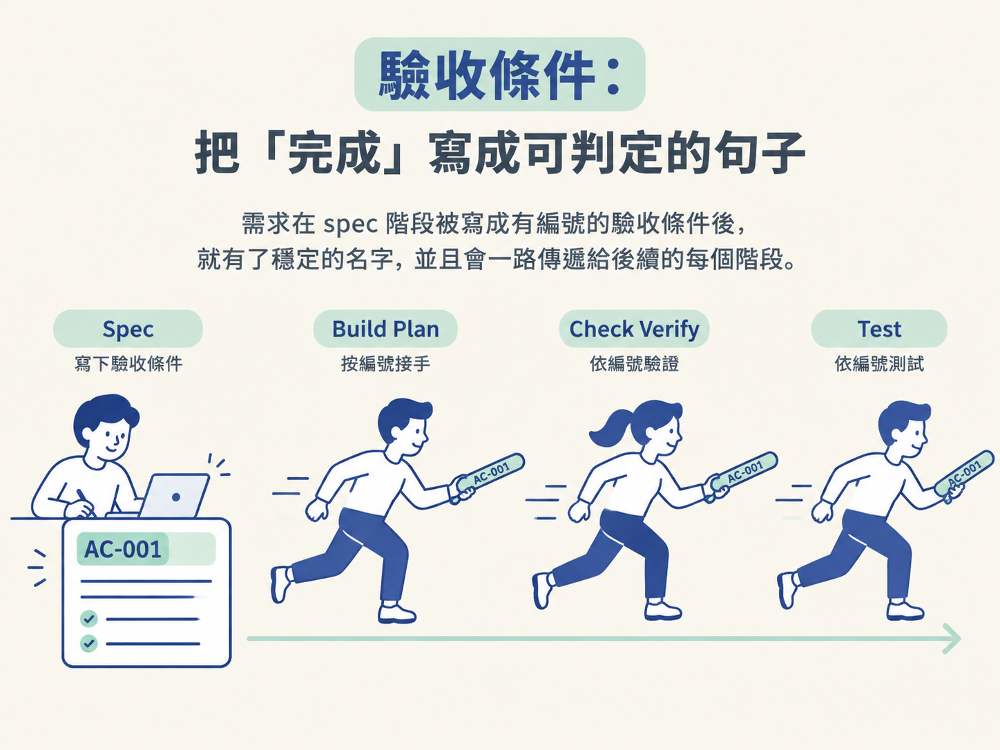
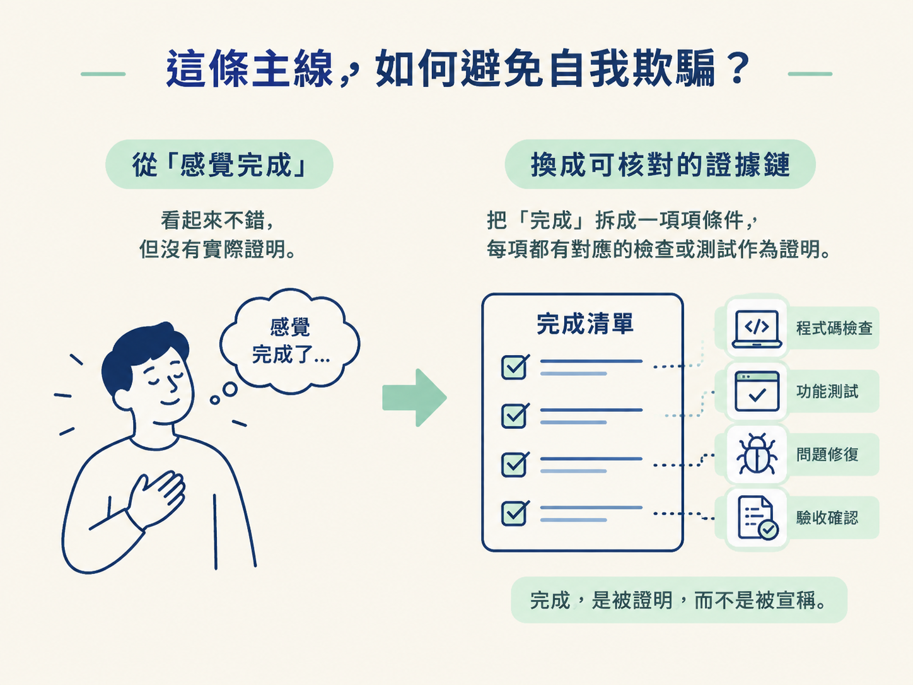

看完這一節，你應該能說明：一條需求如何從 spec 裡的編號開始，被 build plan 指名、由 check verify 實際驗證，再由 test 鎖住；也能解釋這條主線為什麼讓整套流程更誠實。
想像你三個月前用 AI 做了一個搜尋功能。當時點幾下，看起來能動，就先放著去做別的事。三個月後，產品經理問：「搜尋那塊到底完成了嗎？」
你打開程式碼，東看西看，卻很難給出乾脆的答案。問題不一定是誰偷懶，而是「完成」從來沒有被寫成一件可以證明的事。
很多開發流程都有這個毛病：我們把「做完」當成一種感覺，而不是一組能逐條檢查的條件。功能一旦同時牽涉畫面、後端邏輯、資料庫和錯誤處理，靠感覺判斷完成度，幾乎一定會漏東漏西。
這套工作流的解法，是替需求拉出一條貫穿各階段的線：從決策開始，經過程式碼與驗證，最後收進測試。這樣一來，完成不再只是嘴上說說，而是一路證明出來的。
/architect 撰寫 spec 時，會把每一條需求改寫成一條短而且有編號的「完成定義」。這就是 驗收條件（acceptance criteria）。
它不是「支援搜尋」這種模糊的願望，而是一句可以判斷對錯的敘述。例如，待辦清單 app 可以寫成：「已登入的人只會看到自己的待辦事項。」
這句話交代了誰、在什麼條件下，以及應該得到什麼結果。你可以拿它回頭問程式碼：這件事真的成立嗎？
這條需求從此有了穩定的名字。後面的階段可以直接指名同一個編號，不必各自重新描述一次，像接力賽一樣把同一棒交下去。

有了編號，需求才能在不同階段被持續追蹤：
| 階段 | 它對這條編號做了什麼 |
|---|---|
spec（/architect） |
把一條需求寫成一條有編號的「完成定義」。 |
build plan（/develop） |
讓計畫中的每個任務都指明自己服務哪一條編號。 |
check verify（/check verify） |
在真實 app 上，實際跑過這些編號所描述的行為。 |
test（/test） |
把需要長期維持的條件鎖進測試套件，避免之後默默壞掉。 |
把四個階段接起來，就是一條清楚的路徑：
決策 → 滿足需求的程式碼 → 證明會動的證據 → 防止回歸的測試
需求從頭到尾都沿著同一個編號前進，中間不需要每個階段重新發明一套說法，也不容易在交接時失去原本的意義。
它主要擋住兩種很常見的錯覺。
第一種是：「這個我測過了。」
如果驗證不是從驗收條件長出來，而只是隨手點幾個地方，你確實有測試動作，卻不代表測到了真正承諾的行為。有了編號，檢查步驟就必須回指同一批條件。少了哪一條，很快就會被看出來。
第二種是：「看起來完成了。」
一個功能往往包含多條驗收條件。只要其中一條還沒有被證明，主線就會留下缺口：那個編號找不到對應的檢查或測試。功能也許能跑，但它還不能算完整。
所以，這條主線不是額外多一份文件工作，而是把「完成」從一種感覺，換成一份可以逐條核對的證據鏈。程式碼可以寫得很漂亮；只有走完這條線的部分，才真的被證明過。

驗收條件是整套工作流的主線：
/architect把每條需求寫成有編號的「完成定義」，build plan 的任務指名它，develop的檢查步驟回指它，check verify實際跑它，test再把它鎖住。一條需求因此能沿著決策 → 程式碼 → 證據 → 測試一路被追蹤，不會有重要的事漏掉了卻沒人察覺。
這條線要成立，還有一個前提：決定之前，不要開始蓋。下一節會打開 /develop 動手前的那道閘門，看看它如何用機械式檢查，先攔下那些尚未決定的事情。